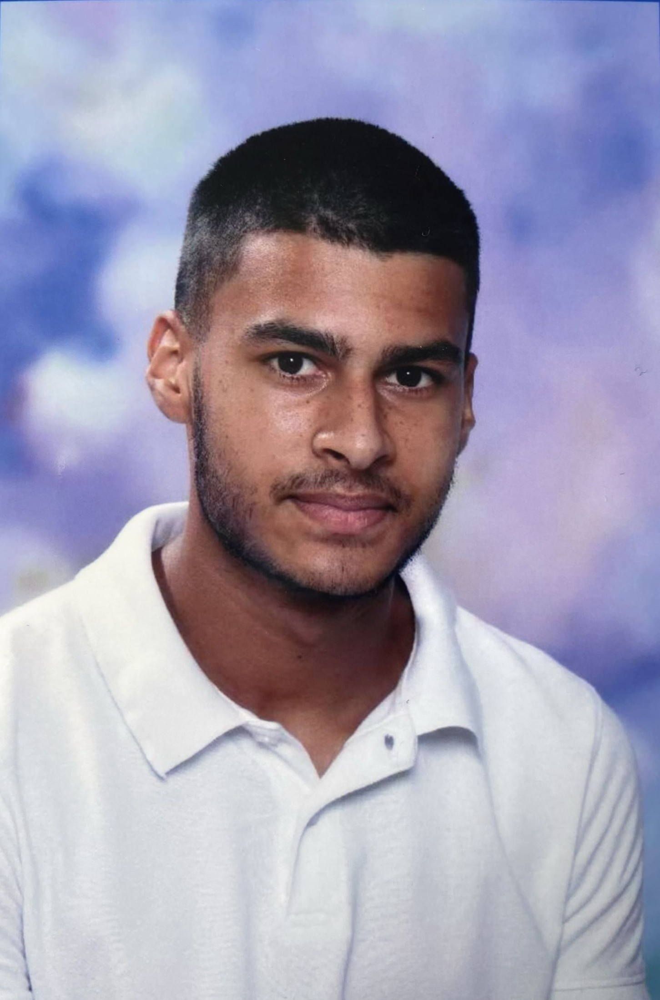

À propos
Actuellement en BTS Services Informatiques aux Organisations (option SLAM),
je me spécialise dans les fondamentaux du développement et des systèmes d’information, avec une orientation progressive vers la cybersécurité.
Rigoureux et méthodique, je m’intéresse particulièrement à la sécurisation des applications, à la gestion des incidents, à la protection des données et aux bonnes pratiques de sécurité dès la phase de conception.
Mon objectif est de contribuer à des systèmes fiables, sécurisés et maintenables, en intégrant les enjeux techniques, organisationnels et réglementaires.
- Objectif pro : Cybersécurité / sécurité des systèmes et applications / poursuite d’études et professionnalisation.
- Forces : Bases de données et gestion des accès, analyse des incidents et résolution de problèmes, tests, documentation et qualité logicielle.
- Soft skills : esprit d’équipe, communication, autonomie.
BTS SIO — option SLAM
Le BTS SIO forme aux métiers de l’informatique. L’option SLAM (Solutions Logicielles et Applications Métiers) met l’accent sur la conception, le développement, la base de données, la qualité, la sécurité et la maintenance d’applications.
Conception
Expression de besoin, user stories, modélisation (UML, MCD/MPD), architecture, API.
Développement
Front/Back, frameworks, ORM, intégration, gestion de configuration et CI/CD.
Données & Sécurité
SQL, transactions, performance, RGPD, OWASP, tests unitaires/fonctionnels.
Projets
Activités en entreprise
Support informatique et gestion du parc
Préparation, masterisation, déploiement, renouvellement et maintenance des postes de travail et équipements utilisateurs.
Prise en charge du support utilisateurs de niveau 1 et 2, diagnostic et résolution d’incidents/demandes, gestion des comptes, accompagnement des utilisateurs et rédaction de procédures internes.
Mise en place de la double authentification PASSKEY
Participation au déploiement d’une solution d’authentification renforcée pour sécuriser l’accès aux services de l’entreprise. Accompagnement des utilisateurs dans l’activation de la solution, vérification du bon fonctionnement et assistance en cas de difficulté.
Réorganisation du kiosque IT
Participation à la réorganisation du kiosque informatique afin d’améliorer la gestion des équipements, la lisibilité des ressources disponibles et l’efficacité de la prise en charge des utilisateurs.
Support à la migration Windows 10 vers Windows 11
Participation à la préparation et à l’accompagnement des utilisateurs dans le cadre de la migration des postes de travail vers Windows 11. Vérification de la compatibilité, assistance aux utilisateurs, résolution des incidents post-migration et suivi des opérations.
Déplacement sur le site de Semoy
Participation au renouvellement du parc informatique sur le site, avec préparation, masterisation, installation et remplacement de postes de travail. Prise en compte de l’environnement technique local, vérification du bon fonctionnement du matériel et accompagnement des utilisateurs lors de la remise en service.
Déplacement sur le site de Calais
Participation au renouvellement du parc informatique sur le site, avec préparation, masterisation, installation etremplacement de postes de travail et d’écrans. Prise en compte de l’environnement technique local, vérification du bon fonctionnement du matériel et accompagnement des utilisateurs lors de la remise en service.
Épreuve E5 — Conception et Développement
Présentation
L’épreuve E5 évalue la capacité du candidat à concevoir et développer des solutions logicielles répondant aux besoins d’une organisation. Elle s’appuie sur des projets réalisés en formation (stages ou personnels).
Compétences évaluées
- Analyser un besoin et concevoir une solution adaptée
- Développer une application web ou logicielle
- Mettre en place une base de données
- Tester et documenter le projet
Épreuve E6 — Parcours professionnel
Présentation
L’épreuve E6 « Parcours de professionnalisation » évalue les compétences acquises au cours des missions réalisées en entreprise. Chaque mission est illustrée par un dossier comprenant la documentation technique, les tests et les fiches de réalisation.
Contenu attendu
- Deux missions professionnelles documentées
- Documentation technique et utilisateur
- Fiche descriptive et fiche de réalisation
- Analyse personnelle du parcours
Veille technologique
Présentation
La veille technologique est un processus continu de recherche et d'analyse des évolutions technologiques, tendances et innovations pertinentes pour mon domaine d'expertise. Elle me permet de rester informé des meilleures pratiques, des nouveaux outils et des menaces de sécurité émergentes.
Domaines couverts
- Sécurité informatique et cybersécurité
- Développement web et frameworks modernes
- Architecture et design patterns
- Outils et pratiques DevOps